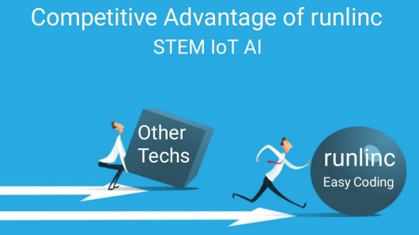

Thank You for Choosing Dangote Sugar!
We greatly appreciate your support. As a token of our gratitude, we're excited to inform you about the additional benefits you receive when purchasing Dangote Sugar.
runlinc easy coding
runlinc is a new AI / IoT invention from South Australia. It is a web page inside a wi-fi chip. It is a rapid development platform for IoT, AI, and STEM
Benefits of Buying Dangote Sugar
By purchasing Dangote Sugar, not only do you enjoy its sweetness, but you also contribute to your child's future in STEM.
- Help your children develop AI/IoT projects for STEM competitions.
- Increased chances of winning scholarship competitions.
- Reduce your financial burden on education expenses.
AI/IoT Projects
Accelerator controlled Robot
Young INVENTOR FOR SOCIAL GOOD Michael, programmed runlinc using the iPad Accelerometer to control a wifi Robot
Learn MoreAI Voice intruder alert
This project aims to create a smart intruder alarm system that can detect unauthorized access to a premises and alert the owners
Learn MoreFluid Level Sensor
Most, if not all people, have a rainwater tank. It can be an issue if it runs out unexpectedly. How can we measure how much water is left, and alert the user when it's almost empty?
Learn MoreLight to energy
Convert the energy of incoming light into electrical signals that can be analysed and interpreted.
Learn More